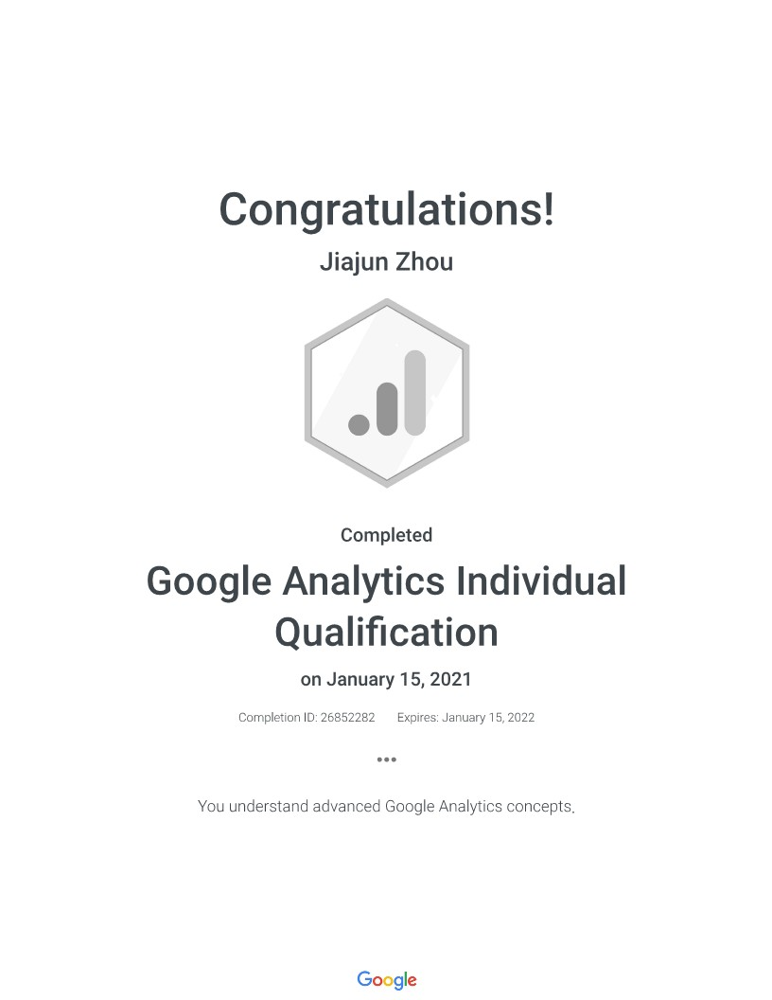

| Portfolio

DevCard - Boootstrap Portfolio Template for Software Developers
You can put one of your secondary projects here. Suspendisse in tellus dolor. Vivamus a tortor eu turpis pharetra consequat quis non metus. Aliquam aliquam, orci eu suscipit pellentesque, mauris dui tincidunt enim, eget iaculis ante dolor non turpis.
DevCard - Boootstrap Portfolio Template for Software Developers
You can put one of your secondary projects here. Suspendisse in tellus dolor. Vivamus a tortor eu turpis pharetra consequat quis non metus. Aliquam aliquam, orci eu suscipit pellentesque, mauris dui tincidunt enim, eget iaculis ante dolor non turpis.
DevCard - Boootstrap Portfolio Template for Software Developers
You can put one of your secondary projects here. Suspendisse in tellus dolor. Vivamus a tortor eu turpis pharetra consequat quis non metus. Aliquam aliquam, orci eu suscipit pellentesque, mauris dui tincidunt enim, eget iaculis ante dolor non turpis.
DevCard - Boootstrap Portfolio Template for Software Developers
You can put one of your secondary projects here. Suspendisse in tellus dolor. Vivamus a tortor eu turpis pharetra consequat quis non metus. Aliquam aliquam, orci eu suscipit pellentesque, mauris dui tincidunt enim, eget iaculis ante dolor non turpis.
| Expereience
Digital Marketing Specialist
Wishare Media Group | El Monte, California | January - August 2019- Actively participated in developing promotional campaigns and digital ads strategy for over 200 clients of local small business in the Asian Community across multiple channels of YouTube, Facebook, WeChat, and WiSharedeals.
- Partnered with various teams to coordinate the process of advertising materials production including not limited to banners, photography, videos, and articles through the introduction of Trello; saw a 20% reduction in completion time.
- Conducted ad performance analysis by creating reports tailored to the goals and providing data-driven recommendations for each client; such as for brand recognition resulting in over 3M daily average impressions through YouTube Ad.
Marketing Intern
CitySpade Realty Cal Inc. | Los Angeles, California | October-December 2018- Contacted over 100 leasing offices and property managers over phone and email to establish the relationship and collected valid apartment information satisfying rental needs for international students around Southern California.
- Managed the social media content along with Wechat Public platform by writing five articles per week regarding students' life and apartment information in Chinese, resulting in over 1000 views on average articles.
Algebra and Statistics Tutor
Learning Center in University of Missouri | August 2016-May 2018- Provided on-site homework Q&A and test preparation for peer students in helping problem-solving and interpreting abstract concepts and reinforced their understanding of course materials during two-hour tutor sessions twice a week.
- Offered One-on-One Tutoring sessions twice a week and saw grade improvement in 100% of students over one semester.
| Education
Master of Science in Business Analytics and Project Management STEM
University of Connecticut | Hartford, Connecticut | Expected Dec 2021- Concentrations Marketing Analytics
- Cumulative GPA: 4.0
- Relevant courses:
- Data Management and Business Modeling
- Statistics in Business Analytics
- Predictive Modeling
- Visual Analytics
- Business Decision Modeling
- Data Mining and Business Intelligence
- Agile Project Management
- Project Leadership and Communications
- Project Risk and Cost Management
Certificate in Data Science
UCLA Extension | Los Angeles, California | Sep 2020 - Jun 2021- Cumulative GPA: 3.83
- Relevant courses:
- Data Analysis Using Python
- Introduction to Data Science
- Exploratory Data Analysis and Visualization
- Hadoop and Managing Big Data
- Machine Learning Using Python
- Relational Database Management
- Advanced Database Management Concepts
- Network Communications with TCP/IP
Bachelor of Science in Psychology with Honor
Bachelor of Science in Statistics
Certificate in Multicultural Studies
University of Missouri, Columbia | Columbia, Missouri| Aug 2014 - May 2018- Cumulative GPA: 3.7
- Honor: Dean’s List | The Curators Grant-In-Aid (GIA) Scholarship Recipient
- Leadership: Vice President of Missouri International Student Council
- Relevant courses:
- Statistical Software and Data Analysis
- Calculus and Linear Algebra
- Sampling Techniques
- Experimental Design
- Applied Statistical Models
- Social Psychology
- Cognitive Psychology
Licenses & certifications
{kind=link}
| Skills
- Statistical Software and Data Analysis
- Calculus and Linear Algebra
- Sampling Techniques
- Experimental Design
- Applied Statistical Models
- Statistical Software and Data Analysis
- Calculus and Linear Algebra
- Sampling Techniques
- Experimental Design
- Applied Statistical Models
- Social Psychology
- Cognitive Psychology
- Social Psychology
- Cognitive Psychology